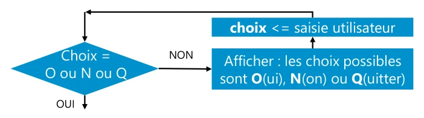

Le texte, les tableaux et le code sont transcrits d’après le PDF de formation. Les sauts de ligne suivent la présentation du support. Les exemples historiques sont commentés dans le cours optimisé.
Page 1
Module 07 – Les structures de boucle
Objectifs
Appréhender les boucles en algorithmique
Utiliser des fonctions arithmétiques
Maîtriser les boucles while, until, for
Coupler read avec while pour lire des fichiers
Page 2
Les structures de boucle
Une boucle est une structure permettant de répéter plusieurs fois un même bloc d’actions.
Le nombre de fois à exécuter le bloc d’actions peut être déterminé par une condition ou une liste d’objets à traiter.
Quand il s’agit d’une condition, penser à faire évoluer la valeur des variables utilisées dans celle-ci (notamment au moyen de calcul).

Boucle de saisie tant que le choix n’est pas O, N ou Q.
Choix = O ou N ou Q ? OUI, poursuivre. NON, afficher les choix possibles, O(ui), N(on) ou Q(uitter), puis refaire la saisie utilisateur.
Trois mécanismes de boucles sont utilisables en Shell :
while
until
for
expr : calcul arithmétique
Page 3
expr : calcul arithmétique
Syntaxe
expr calcul
Les arguments passés à la commande peuvent être des entiers ou des variables (contenant des entiers). Chaque opérateur doit être précédé et suivi d’un espace.
expr 2 + 7
Les commandes let et ((…)) peuvent être utilisées
9
en remplacement de la commande expr.
expr 2 \* 7
Nous les étudions au module « L’arithmétique entière »
14
La boucle while (tant que)
Page 4
La boucle while (tant que)
Structure de bouclage basée sur une condition atteinte : tant que la condition est atteinte, on effectue le bloc d’actions. Moderne Classique
while CONDITION
while CONDITION ; do
do
ACTIONS
ACTIONS
done
done
Dans ce support, la forme moderne de la structure sera prise pour les exemples. Mais vous pouvez choisir la méthode de votre choix.
La boucle until vue plus loin aura les mêmes méthodes d’écriture moderne ou classique.
La boucle while (tant que)
Exemple
Imposer la saisie du nom à l’utilisateur
while [[ -z "$nom" ]] ; do
echo -e "Veuillez entrer votre nom : \c"
read nom
done
echo "Bonjour $nom"
La structure while analyse le code retour de la condition pour déterminer si le bloc d’actions est à exécuter ou s’il doit sortir de la boucle.
Généralement, la condition se matérialise par une commande de test.
On agit alors dans le bloc d’actions afin de faire évoluer le résultat du test.
Cependant, toute commande peut être utilisée en condition (tant que son code retour est « 0 », on reste dans la boucle).
Page 5
La boucle while (tant que)
Cas particulier des boucles infinies
Pour générer une boucle infinie, on utilise la commande true ou ":".
Les boucles infinies sont notamment utilisées pour la création de menus.
while true ;
do
echo menu
# Affichage du menu
echo "1) copie des fichiers"
echo "2) restauration des fichiers"
echo "q) Quitter"
# Récupérer la saisie de l'utilisateur dans $choix
read -p "Taper 1, 2 ou q pour continuer : " choix
# Tester la valeur de $choix
case $choix in
1) echo copie des fichiers; […] ;;
2) echo restauration des fichiers; […] ;;
q) clear ; exit 0 ;;
*) echo -e "\e[41msaisie incorrecte \e[0m" ;;
esac
done
La boucle until (jusqu’à)
Page 6
La boucle until
Structure basée sur une condition à atteindre : tant que la condition n’est pas atteinte, on effectue un bloc d’actions.
La vérification de la condition mène à la sortie de la boucle.
La structure until et son mode de fonctionnement sont identiques à la boucle while. Seule la condition de bouclage les différencie.
Pour faire une boucle infinie avec until, il est possible d’utiliser la commande false.
Structure
until [[ -n "$age" ]] ; do
until CONDITION ; do
echo -e "Saisissez votre age : \c"
ACTIONS
read age
Done
done
la boucle until
Démo
La boucle until
Page 7
La boucle for
La boucle for
La boucle for peut boucler :
Pour un ensemble de valeurs à traiter
Un nombre de fois prédéterminé
Page 8
La boucle for
Boucler pour un ensemble de valeurs
La syntaxe d’utilisation suivante permet de boucler pour un ensemble de valeurs à traiter.
for element in LISTE DE VALEURS ; do
ACTIONS
done
Lors du premier passage dans la boucle, la valeur affectée à la variable définie $element sera la première valeur de la liste : « LISTE ».
Lors du second passage, $variable contiendra « DE » et ainsi de suite jusqu’à ce que les valeurs aient été traitées.
La boucle for
Boucler pour un ensemble de valeurs
La liste de valeurs est
$ for valeurs in "petit exemple" de "boucle for" ; do
Exemple
>echo "Entrée dans le bloc d’actions de la boucle"
interprétée par le Shell.
>echo "contenu de la variable valeurs : $valeurs"
La liste des caractères de
>done
séparation de champs entre
Entrée dans le bloc d’actions de la boucle
contenu de la variable valeurs : petit exemple
les différentes valeurs est
Entrée dans le bloc d’actions de la boucle
récupérée depuis la variable
contenu de la variable valeurs : de
d’environnement IFS
Entrée dans le bloc d’actions de la boucle
contenu de la variable valeurs : boucle for
(Internal Field Separator).
Il est parfois utile de modifier
# set | grep ^IFS
cette valeur.
IFS=$' \t\n'
Page 9
Les structures de boucle
Mise en situation
Les boucles for
Réaliser l’atelier numéro 7 mis à disposition par le formateur
TP
Utilisation cumulée de while et read
Page 10
Utilisation cumulée de while et read
La boucle for récupère les séparateurs de champs définis pour le contexte d’exécution en cours (via la variable IFS).
Les caractères espace, tabulation (\t) ou retour à la ligne (\n) ne sont pas interprétés comme caractères quelconques, mais comme des séparateurs.
L’utilisation combinée de while et de read permet :
De traiter ligne par ligne un fichier (ou résultat de commande)
De traiter distinctement les champs de chaque ligne
Utilisation cumulée de while et read
Exemple d’utilisation
thouin Frèdèric linux
brossier Gilles windows
[…]
Traitement avec une boucle for Traitement avec while read
for var in $(cat fichier.txt) ; do
while read nom prenom suite ; do
echo "$var"
echo "$prenom $nom"
done
done < fichier.txt
thouin
Frédéric thouin
Frédéric
Gilles brossier
linux
brossier
Gilles
windows
…
Page 11
Utilisation cumulée de while et read
La structure combinée while read nous permet d’utiliser distinctement les trois champs de chaque ligne du fichier, à la différence de for qui ne le permet pas directement.
L’argument suite passé à la commande read n’est pas utilisé dans le bloc d’actions.
Il est cependant nécessaire afin que toutes les informations de fin de ligne ne soient pas stockées dans la variable prenom.
La syntaxe présentée ci-dessous est utilisée quand les informations à traiter se trouvent dans un fichier.
while read nom prenom suite ; do
echo "$prenom $nom"
done < fichier.txt
while / read avec
redirection d’entrée
Page 12
while / read avec redirection d’entrée
Pour utiliser le résultat de commandes comme flux d’entrée ou pour effectuer un traitement au fichier avant la boucle while read, on utilise la syntaxe suivante :
while read nom prenom reste ; do
echo "$prenom $nom"
Bien respecter les espaces
done < <(cat Edition)
comme dans cet exemple.
Alternativement, cette syntaxe peut être utilisée :
cat Edition | while read nom prenom num
do
Le pipe suppose la création d’un sous Shell. Les variables
echo "$prenom $nom"
créées dans le script ne sont pas utilisables dans la boucle.
done
Cette méthode a l’avantage d’une meilleure lisibilité.
- Pour aller plus loin - Utilisation read dans une
boucle while read
Page 13
Pour aller plus loin – Utilisation de read dans une boucle while read
La commande read utilisée avec while a pour flux d’entrée le flux stdin (généré par la commande avant le pipe).
Ce flux n’est pas exploitable par un second read.
Pour utiliser un second read, il faut rediriger son flux d’entrée standard depuis /dev/tty (périphérique correspondant aux saisies clavier).
cat fic | while read nom ; do
if [[ "$nom" = toto ]] ; then
echo "$nom"
read -p "message : " choix </dev/tty
echo "$choix"
fi
done
Alternativement, cette syntaxe peut être utilisée :
while read nom ; do
if [[ "$nom" = toto ]] ; then
echo "$nom"
read -p "message : " choix </dev/tty
echo "$choix"
fi
done < <(cat fic)